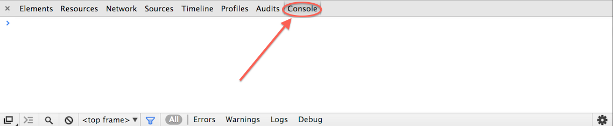

Where did JavaScript come from?
1990(ish): Berners-Lee creates HTML
1990(ish): Berners-Lee creates HTML
1993: Mosaic (first popular web browser)
1990(ish): Berners-Lee creates HTML
1993: Mosaic (first popular web browser)
1995: Javascript first released by Netscape
1990(ish): Berners-Lee creates HTML
1993: Mosaic (first popular web browser)
1995: Javascript first released by Netscape
1996: Microsoft kind-of implements Javascript
Microsoft seemed to participate and even implemented some of the proposals...
Over time it was clear though that Microsoft had no intention of cooperating or implementing proper JS in IE, even though they had no competing proposal.
W3C: A short history of Javascript
The Basics
The Basics

alert('Stephen! Behind you!!')
function alertPerson(name) {
alert(name + '! Behind you!!');
}
map = { zoom: 9, place: 'New York' }
Libaries
Libaries
A bunch of code someone else wrote that you can reuse
A libary that makes maps for you
map = L.map('map').setView([40.6968, -73.9732], 13);
map = L.map('map').setView(CENTER, ZOOM);
L.tileLayer('http://{s}.tiles.mapbox.com/v3/ebrelsford.map-qexgingq/{z}/{x}/{y}.png', {
attribution: '(attribution)'
}).addTo(map);
L.tileLayer(YOUR MAPBOX URL, {
attribution: ATTRIBUTION FOR LAYER
}).addTo(map);
While viewing the map, paste this into the console:
map.setZoom(16)
map.panBy([_.random(-500, 500), _.random(-500, 500)])
 NYTimes Mayoral Primaries map
NYTimes Mayoral Primaries map